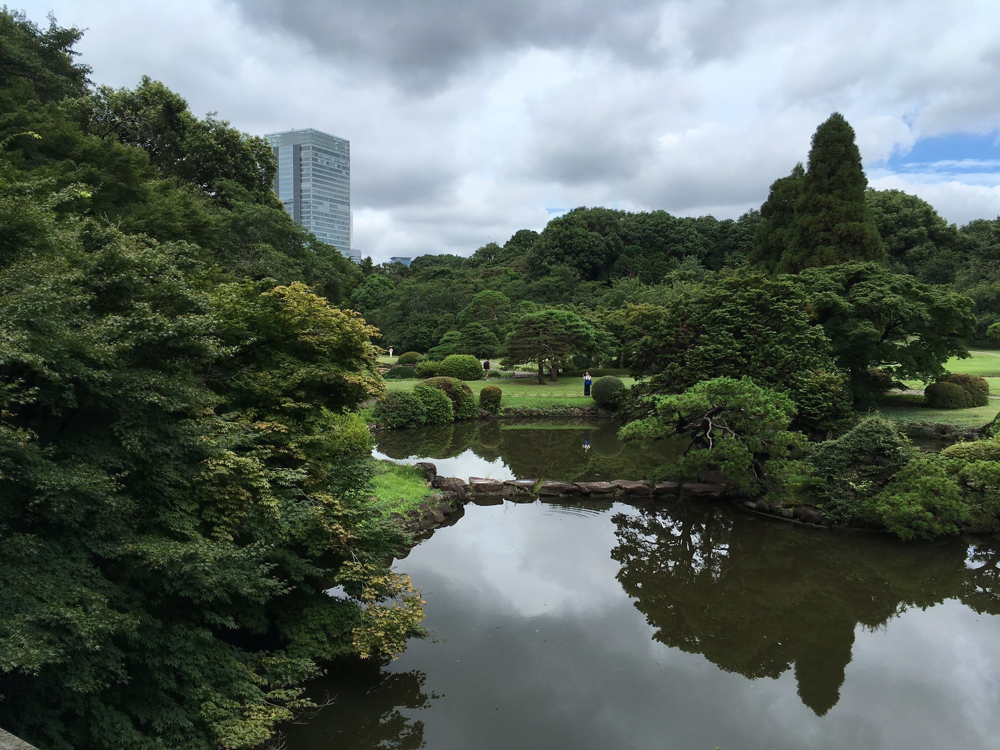

HISTORY
Shinjuku Gyoen was constructed by a “daimyo” (feudal lord) at the Edo era (1591). After the Meiji Restoration, the site was owned by the emperor, and the essence of European style garden was adopted. After the World War II, Shinjyuku Gyoen become the public garden.
INFORMATION
Entrance Fee
- Adult = ¥500
- Seniors(Over 65 years old) = ¥250
- Students = ¥250
- Children(Junior high school students / 15 and under) = FREE
Opening Hours
- 10/1 ~ 3/14 = 9:00 ~ 16:00
- 3/15 ~ 6/30 = 9:00 ~ 17:30
- 7/1 ~ 8/20 = 9:00 ~ 18:30
- 8/21 ~ 9/30 = 9:00 ~ 17:30
Access
Address : The National Gardens Association Shinjuku Gyoen National Garden 11 Naito-machi, Shinjuku-ku, Tokyo 160-0014, Japan
Call : +81-(0)3-3341-1461
Email : info-shinjuku@fng.or.jp